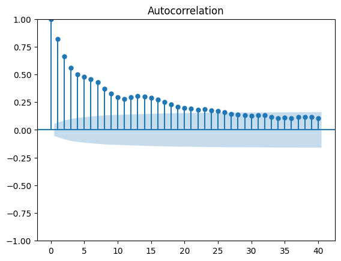
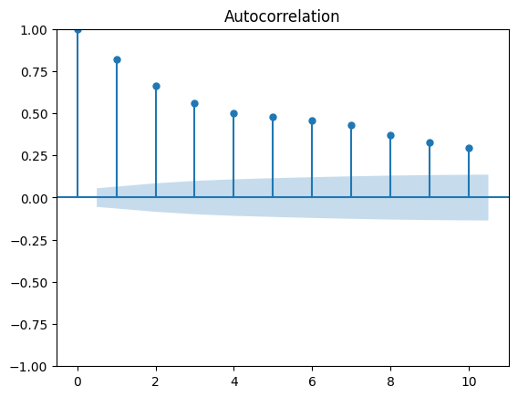
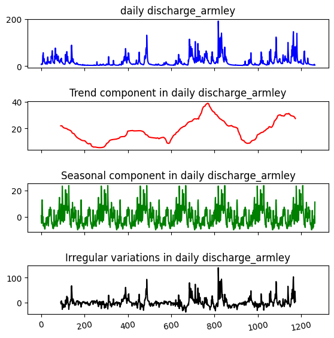
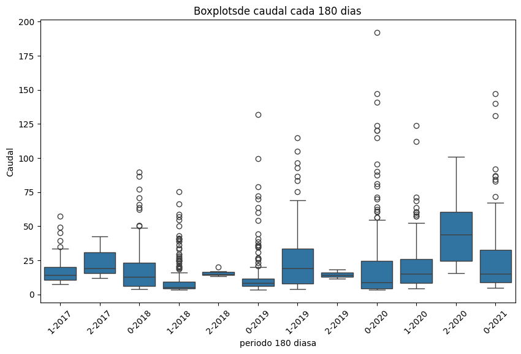
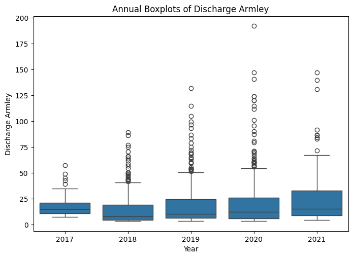
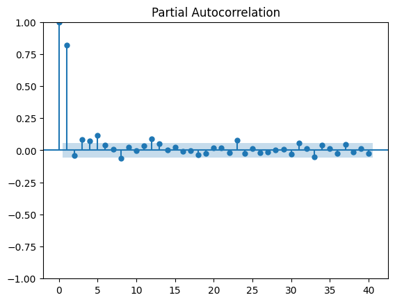
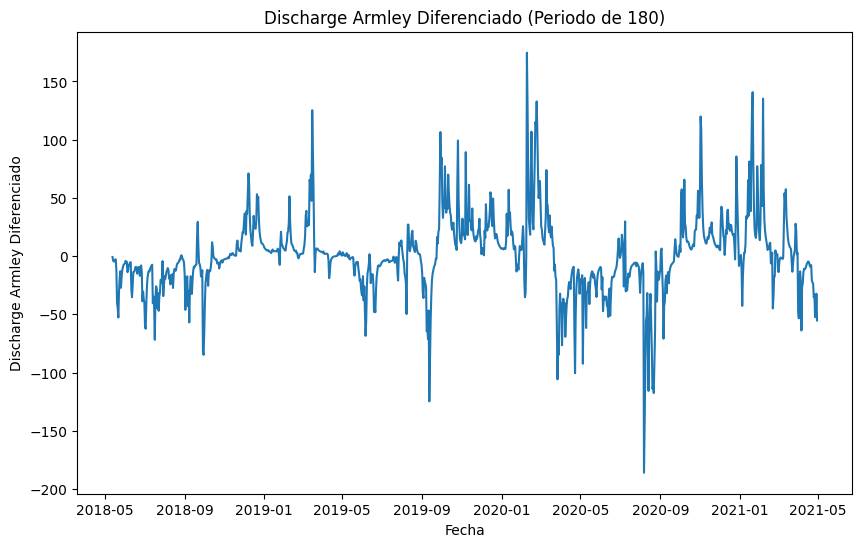

ANÁLISIS EXPLORATORIO DE DATOS#
Conceptualización#
El Air River, es un complejo fluvial que a lo largo de la historia Inglesa, ha sido importante para la economía local, sirviendo como vía de transporte para mercancías durante la Revolución Industrial. El río estuvo relacionado con el desarrollo de la industria textil en la región de Yorkshire y su biodiversidad es conocida por albergar variedades de pecesasí como aves y otros animales que dependen del río. Comprende una basta extensión de aguas que fluye a través de Yorkshire, en el norte de Inglaterra. Se origina en las Colinas de Pennine cerca de Malham, y fluye en dirección este hasta unirse al Ouse River cerca de Goole.
En la imagen a continuación se detalla una sección del recorrido (36 km) que realiza el río entre las ciudades objetos de éste estudio (Kildwick y Armley).
!pip install scikit-posthocs
Collecting scikit-posthocs
Downloading scikit_posthocs-0.10.0-py3-none-any.whl.metadata (5.8 kB)
Requirement already satisfied: numpy in c:\users\isabe\miniconda3\envs\ven_st\lib\site-packages (from scikit-posthocs) (2.0.2)
Requirement already satisfied: scipy>=1.9.0 in c:\users\isabe\miniconda3\envs\ven_st\lib\site-packages (from scikit-posthocs) (1.13.1)
Requirement already satisfied: statsmodels in c:\users\isabe\miniconda3\envs\ven_st\lib\site-packages (from scikit-posthocs) (0.14.4)
Requirement already satisfied: pandas>=0.20.0 in c:\users\isabe\miniconda3\envs\ven_st\lib\site-packages (from scikit-posthocs) (2.2.3)
Requirement already satisfied: seaborn in c:\users\isabe\miniconda3\envs\ven_st\lib\site-packages (from scikit-posthocs) (0.13.2)
Requirement already satisfied: matplotlib in c:\users\isabe\miniconda3\envs\ven_st\lib\site-packages (from scikit-posthocs) (3.9.2)
Requirement already satisfied: python-dateutil>=2.8.2 in c:\users\isabe\miniconda3\envs\ven_st\lib\site-packages (from pandas>=0.20.0->scikit-posthocs) (2.9.0.post0)
Requirement already satisfied: pytz>=2020.1 in c:\users\isabe\miniconda3\envs\ven_st\lib\site-packages (from pandas>=0.20.0->scikit-posthocs) (2024.2)
Requirement already satisfied: tzdata>=2022.7 in c:\users\isabe\miniconda3\envs\ven_st\lib\site-packages (from pandas>=0.20.0->scikit-posthocs) (2024.2)
Requirement already satisfied: contourpy>=1.0.1 in c:\users\isabe\miniconda3\envs\ven_st\lib\site-packages (from matplotlib->scikit-posthocs) (1.3.0)
Requirement already satisfied: cycler>=0.10 in c:\users\isabe\miniconda3\envs\ven_st\lib\site-packages (from matplotlib->scikit-posthocs) (0.12.1)
Requirement already satisfied: fonttools>=4.22.0 in c:\users\isabe\miniconda3\envs\ven_st\lib\site-packages (from matplotlib->scikit-posthocs) (4.53.1)
Requirement already satisfied: kiwisolver>=1.3.1 in c:\users\isabe\miniconda3\envs\ven_st\lib\site-packages (from matplotlib->scikit-posthocs) (1.4.7)
Requirement already satisfied: packaging>=20.0 in c:\users\isabe\miniconda3\envs\ven_st\lib\site-packages (from matplotlib->scikit-posthocs) (24.1)
Requirement already satisfied: pillow>=8 in c:\users\isabe\miniconda3\envs\ven_st\lib\site-packages (from matplotlib->scikit-posthocs) (10.4.0)
Requirement already satisfied: pyparsing>=2.3.1 in c:\users\isabe\miniconda3\envs\ven_st\lib\site-packages (from matplotlib->scikit-posthocs) (3.1.4)
Requirement already satisfied: importlib-resources>=3.2.0 in c:\users\isabe\miniconda3\envs\ven_st\lib\site-packages (from matplotlib->scikit-posthocs) (6.4.5)
Requirement already satisfied: patsy>=0.5.6 in c:\users\isabe\miniconda3\envs\ven_st\lib\site-packages (from statsmodels->scikit-posthocs) (0.5.6)
Requirement already satisfied: zipp>=3.1.0 in c:\users\isabe\miniconda3\envs\ven_st\lib\site-packages (from importlib-resources>=3.2.0->matplotlib->scikit-posthocs) (3.20.2)
Requirement already satisfied: six in c:\users\isabe\miniconda3\envs\ven_st\lib\site-packages (from patsy>=0.5.6->statsmodels->scikit-posthocs) (1.16.0)
Downloading scikit_posthocs-0.10.0-py3-none-any.whl (33 kB)
Installing collected packages: scikit-posthocs
Successfully installed scikit-posthocs-0.10.0
from IPython.display import Image, display
# Ruta relativa a la imagen dentro de tu Jupyter Book
image_path = "Air river.png"
# Mostrar la imagen
display(Image(filename=image_path))

Introducción#
El estudio del caudal de un rió, permite conocer la capacidad de movilizar un volumen de agua en una unidad de tiempo determinada. Con el fin de planificar desarrollos tenológicos, logísitcos y sociales, que van desde la implementación de sistema de extracción de energías renovables (Hidroelectricas), la navegabilidad marítima comercial o lúdica, y el abastecimiento de agua de los localidades aledañas.
Pronósticar el caudal del Air River, en el inmediato o corto plazo es indispensable para implementar estrategias abastecimiento de auga de las empresas encargadas del tratamiento y potabilización, prevenir periodos de sequías o peligros potenciales de desbordamientos, así como las rutas seguras que el comercio local puede seguir en la navegabilidad del río.
Sin emnbargo, las multiples variables que impactan el caudal de un río, hacen que pronósticar su valor futuro sea una reto complejo de abordar. Razón por lo cual, en el presente estudio se omitirán el impacto individual de dichas variables, y se concentrará en el impacto colectivo de las mismas, utilizando como única variable descrictora el tiempo.
Los datos#
import pandas as pd
df = pd.read_csv('river_aire_discharge_timeseries.csv', delimiter=',')#.sort_values('Date')
# Convertir la columna de fechas al formato de fecha
df['Date'] = pd.to_datetime(df['Date'], format='%d/%m/%Y')
# Muestra las primeras filas del DataFrame
print(df.head())
Date SF_absolute_humidity SF_relative_humidity \
0 2017-11-14 8.3 86.2
1 2017-11-15 7.6 87.0
2 2017-11-16 6.4 78.8
3 2017-11-17 5.4 77.3
4 2017-11-18 5.6 74.0
SF_mean_air_temperature SF_atmospheric_pressure SF_potential_evaporation \
0 10.4 1013.1 0.4
1 8.8 1016.3 0.4
2 7.7 1014.7 0.6
3 5.6 1019.7 0.6
4 6.5 1013.1 0.7
SF_net_radiation SF_volumetric_water_content SF_soil_temperature \
0 0.8 32.4 6.9
1 1.1 31.3 8.1
2 -2.7 31.8 7.1
3 -2.3 32.5 4.9
4 -2.3 30.4 5.2
SF_wind_speed ... river_level_snaygill river_level_kildwick \
0 2.9 ... 0.417 0.366
1 1.6 ... 0.695 0.496
2 3.2 ... 0.715 0.497
3 2.9 ... 0.631 0.476
4 3.4 ... 0.534 0.430
river_level_kirkstall headingley_precipitation malham_precipitation \
0 1.514 1.4 9.6
1 1.545 0.0 3.8
2 1.544 0.4 1.6
3 1.562 0.0 0.8
4 1.536 0.0 0.0
skipton_snaygill_precipitation farnley_hall_precipitation \
0 0.8 0.8
1 0.8 0.0
2 2.4 0.2
3 0.4 0.0
4 0.0 0.0
embsay_precipitation silsden_precipitation lower_laithe_precipitation
0 6.6 1.2 1.0
1 2.2 1.2 1.4
2 1.6 1.0 2.0
3 0.2 0.4 0.2
4 0.0 0.0 0.2
[5 rows x 24 columns]
Las variables de interés en la base de datos se denominan ‘discharge_kildwick’ y ‘discharge_armley’
series = data_us['discharge_armley']
series = pd.Series(series)
series.describe()
count 1264.000000
mean 19.092943
std 21.316441
min 3.300000
25% 5.720000
50% 11.050000
75% 23.425000
max 192.000000
Name: discharge_armley, dtype: float64
El promedio de los datos de la serie es de 8.18 La desviación esatndar es de 10.95, lo cuál nos podría decir que los datos están dispersos El minimo caudal registrado es de 0.515 El 25% de los valores de la serie son menores o iguales que 1.510 El 50% de los valores de la serie son menores o iguales (mediana) 4.160 El 75% de los valores de la serie son menores o iguales 9.78 El valor máximo registrado en el caudal es de 85.3
print('Shape of the DataFrame:', data_us.shape)
data_us.head(10)
Shape of the DataFrame: (1264, 5)
| index | Date | discharge_kildwick | discharge_armley | year | |
|---|---|---|---|---|---|
| 0 | 0 | 2017-11-14 | 3.69 | 7.43 | 2017 |
| 1 | 1 | 2017-11-15 | 4.56 | 9.66 | 2017 |
| 2 | 2 | 2017-11-16 | 5.45 | 10.30 | 2017 |
| 3 | 3 | 2017-11-17 | 4.19 | 9.69 | 2017 |
| 4 | 4 | 2017-11-18 | 3.55 | 8.37 | 2017 |
| 5 | 5 | 2017-11-19 | 3.18 | 7.89 | 2017 |
| 6 | 6 | 2017-11-20 | 10.90 | 17.70 | 2017 |
| 7 | 7 | 2017-11-21 | 28.10 | 45.30 | 2017 |
| 8 | 8 | 2017-11-22 | 34.80 | 49.30 | 2017 |
| 9 | 9 | 2017-11-23 | 33.40 | 57.40 | 2017 |
data_us=df[['discharge_kildwick']].copy()
data_us.loc[:,'discharge_armley']=df['discharge_armley']
data_us.set_index(df.index,inplace=True)
data_us.head()
| discharge_kildwick | discharge_armley | |
|---|---|---|
| 0 | 3.69 | 7.43 |
| 1 | 4.56 | 9.66 |
| 2 | 5.45 | 10.30 |
| 3 | 4.19 | 9.69 |
| 4 | 3.55 | 8.37 |
Datos faltantes#
missing = (pd.isnull(data_us['discharge_kildwick']))|(pd.isnull(data_us['discharge_armley']))
print('Number of missing values found:', missing.sum())
data_us = data_us.loc[~missing, :]
Number of missing values found: 0
No hay presencia de datos faltantes
Interpretación gráfica#
import pandas as pd
import matplotlib.pyplot as plt
# Convertir la columna de fechas al formato de fecha
df['Date'] = pd.to_datetime(df['Date'], format='%d/%m/%Y')
# Configurar la columna 'Date' como índice
df.set_index('Date', inplace=True)
# Crear una figura y ejes para varias series de tiempo
fig, ax = plt.subplots(figsize=(10, 6))
# Graficar series de tiempo
ax.plot(df.index, df['discharge_kildwick'], label='Caudal en Kildwick/England')
ax.plot(df.index, df['discharge_armley'], label='Caudal en Armley/England')
# Personalizar gráfico
ax.set_title('Series de Tiempo Caudal River Air')
ax.set_xlabel('Fecha')
ax.set_ylabel('Discharge')
ax.legend()
# Mostrar gráfico
plt.xticks(rotation=45)
plt.tight_layout()
plt.show()

El caudal del rio Amley muestra variaciones significativas a lo largo del tiempo, con presencia de picos.En la gráfica se puede observar que hay momentos donde el caudal del rio aumenta, que es aproximadamente al inciio del 2019,2020 y 2021, esto podría ser por lluvias intensas
Validación frecuencia#
import pandas as pd
df.index = pd.to_datetime(df.index)
frecuencia = pd.infer_freq(df.index)
print("Frecuencia inferida:", frecuencia)
Frecuencia inferida: D
En el dataframe están registrado los datos diarios
from sklearn.linear_model import LinearRegression
import numpy as np
trend_model = LinearRegression(fit_intercept=True)
trend_model.fit(np.arange(df.shape[0]).reshape(-1, 1), df['discharge_armley'])
LinearRegression()In a Jupyter environment, please rerun this cell to show the HTML representation or trust the notebook.
On GitHub, the HTML representation is unable to render, please try loading this page with nbviewer.org.
LinearRegression()
print('Trend model coefficient={} and intercept={}'.format(trend_model.coef_[0], trend_model.intercept_))
Trend model coefficient=0.008201684717394096 and intercept=13.913579138940314
EL valor de tendencia muestra que linea de tendencia tiene un coeficiente positivo, indica una tendencia creciente en los datos a lo largo del tiempo y el intercepto es de 13.913 cuando el tiempo es igual a cero
La combinación de la tendencia positiva y el intercepto positivo indica que la serie tiene un comportamiento ascendente
Distribución normal#
Kolmogorov-Smirnov
import numpy as np
from scipy import stats
Caudal_np = data_us[['discharge_armley']].values.flatten() # Asegúrate de convertir a un arreglo 1D
# Prueba de Kolmogorov-Smirnov
print('Kolmogorov-Smirnov:')
stat, p = stats.kstest(Caudal_np, stats.norm.cdf)
print(f'Statistics={stat:.6f}, p={p:.6e}')
# Nivel de significancia
alpha = 0.05
if p > alpha:
print('Sample looks Normal (fail to reject H0)')
else:
print('Sample does not look Normal (reject H0)')
Kolmogorov-Smirnov:
Statistics=0.999517, p=0.000000e+00
Sample does not look Normal (reject H0)
El resultado de la prueb KS muestra que no siguien una distribución normal
Estacionariedad#
Dickey-Fuller
La descarga/caudal del rio se suele presentar un comportamiento estacional por las variaciones periódicas en el clima y otros factores
import matplotlib.pyplot as plt
from statsmodels.graphics.tsaplots import plot_acf
df.index = pd.to_datetime(df.index)
from statsmodels.stats.diagnostic import acorr_ljungbox
df.head()
| SF_absolute_humidity | SF_relative_humidity | SF_mean_air_temperature | SF_atmospheric_pressure | SF_potential_evaporation | SF_net_radiation | SF_volumetric_water_content | SF_soil_temperature | SF_wind_speed | catchment_daily_precipitation_armley | ... | river_level_snaygill | river_level_kildwick | river_level_kirkstall | headingley_precipitation | malham_precipitation | skipton_snaygill_precipitation | farnley_hall_precipitation | embsay_precipitation | silsden_precipitation | lower_laithe_precipitation | |
|---|---|---|---|---|---|---|---|---|---|---|---|---|---|---|---|---|---|---|---|---|---|
| Date | |||||||||||||||||||||
| 2017-11-14 | 8.3 | 86.2 | 10.4 | 1013.1 | 0.4 | 0.8 | 32.4 | 6.9 | 2.9 | 2.309286 | ... | 0.417 | 0.366 | 1.514 | 1.4 | 9.6 | 0.8 | 0.8 | 6.6 | 1.2 | 1.0 |
| 2017-11-15 | 7.6 | 87.0 | 8.8 | 1016.3 | 0.4 | 1.1 | 31.3 | 8.1 | 1.6 | 1.518702 | ... | 0.695 | 0.496 | 1.545 | 0.0 | 3.8 | 0.8 | 0.0 | 2.2 | 1.2 | 1.4 |
| 2017-11-16 | 6.4 | 78.8 | 7.7 | 1014.7 | 0.6 | -2.7 | 31.8 | 7.1 | 3.2 | 1.579437 | ... | 0.715 | 0.497 | 1.544 | 0.4 | 1.6 | 2.4 | 0.2 | 1.6 | 1.0 | 2.0 |
| 2017-11-17 | 5.4 | 77.3 | 5.6 | 1019.7 | 0.6 | -2.3 | 32.5 | 4.9 | 2.9 | 0.330846 | ... | 0.631 | 0.476 | 1.562 | 0.0 | 0.8 | 0.4 | 0.0 | 0.2 | 0.4 | 0.2 |
| 2017-11-18 | 5.6 | 74.0 | 6.5 | 1013.1 | 0.7 | -2.3 | 30.4 | 5.2 | 3.4 | 0.038513 | ... | 0.534 | 0.430 | 1.536 | 0.0 | 0.0 | 0.0 | 0.0 | 0.0 | 0.0 | 0.2 |
5 rows × 23 columns
ACF#
plt.figure(figsize=(5.5, 5.5))
plot_acf(data_us['discharge_armley'], lags=40)
plt.show()
<Figure size 550x550 with 0 Axes>

Con un intervalo del 95%. En los primeros valores tienen una autocorrelación alta y y positiva, además se observa que la serie va disminuyendo a medida que aumentan los lags, lo que indica que la serie tiene un patrón persistente
En los primeros barras se observa que hay una correlación significativa entre los valores actuales de la serie y sus valores anteriores, por lo tanto se dice que la serie no es completamente aleatoria y que existe dependencia entre los valores.
A medidad que aumentan los lags, las barras van disminuyendo, por lo que indica que para los valores más grandes la correlación No es significativa, por lo que se puede decir que hay tendencia a corto plazo
plt.figure(figsize=(5.5, 5.5))
plot_acf(data_us['discharge_armley'], lags=10)
plt.show()
<Figure size 550x550 with 0 Axes>

Los rezagos significativos están en los primero 10 lags
Independencia#
#H0: Los datos son independientes
#H1: Los datos no son independientes
ljung_box_test = acorr_ljungbox(data_us['discharge_armley'], lags=10, return_df=True)
ljung_box_pvalue = ljung_box_test['lb_pvalue'].values[0]
if ljung_box_pvalue < 0.05:
print("La serie no estacionaria, el p-valor de la prueba es", ljung_box_pvalue)
La serie no estacionaria, el p-valor de la prueba es 1.0980926305539803e-187
Cuando se aplica la prueba de Ljun Box se observa que el estadistico de prueba es bajo, por lo tanto se dice que los datos son dependientes. Es decir que lo que paso antes me puede ayudara a predecir lo que ocurrira, esto puede estar realacionado con la estacionalidad de los datos
Estacionariedad#
from statsmodels.tsa.stattools import adfuller
# Ho: la serie de tiempo no es estacionaria
# Ha: La serie de tiempo es estacionaria
result = adfuller(data_us['discharge_armley'])
print("Estadístico ADF:", result[0])
print("Valor p:", result[1])
print("Valores críticos:")
for key, value in result[4].items():
print(f" {key}: {value}")
Estadístico ADF: -5.334211027019817
Valor p: 4.6494292545753305e-06
Valores críticos:
1%: -3.4355880246374304
5%: -2.8638531175675896
10%: -2.568001531098063
En la prueba de ADF nos da un estadistico de -5.33 y este es menor que todos los valores críticos, inclyuendo la del 1% (99% de confianza). Es decir que la estacionariedad de las serie es muy fuerte. Se comprueba la teoría que se tenia, que los datos del caudal del rio son estacionarios
Análisis preliminar#
En general el caudal de un río dependerá signficativamente de la localidad en donde éste se mida. Sin embargo las fluctuaciones del mismo serán proporcionales en cada zona.
De las interpretaciones preliminales que podemos observar en este tipo de datos de series temporales, es la estacionalidad y movimientos ciclicos de las variables medidas que se repiten con una regularidad, claramente marcada por los periodos de incremento y disminución de la pluviosidad en cada estación. La escaza o nula tendencia existente en los datos, es un comportamiento habitual de las variables que dependen de fenómenos naturales, los cuales crecen o decrecen a ritmos muy bajos solo perceptibles en largos periodos de tiempos con datos de varias décadas o siglos.
Particularmente, los datos observados del Air River donde los bajos caudales concuerdan con las estaciones del Verano y otoño entre los meses de abril a noviembre. Los picos en los caudales corresponden a las estaciones de invierno y primavera, la cual se dá entre los meses de diciembre a marzo en los paises de Reino Unido.
Fuente: https://www.npl.co.uk/resources/q-a/when-do-the-four-seasons-begin
Descomposición de la serie temporal#
import pandas as pd
import numpy as np
from statsmodels.tsa import stattools
from statsmodels.tsa import seasonal
from matplotlib import pyplot as plt
En los datos es sencillo identificar el periodo de estacionalidad, dado que están ligados a la frecuencia de cambio en los periodos de altas lluvias y bajas lluvias. Que en inglaterra están dados cada 180 días.
Al utilizar 180 días se evidencia lo siguiente:
Se presentan fluctiaciones en el caudal del rio Se puede observar como al inicio de la serie se tiene una tendencia moderada y se presenta un pico arpoximadamente a mitad de la serie Se pueden obervar patrones los cuales indican estacioanlidad, los picos suguieren que hay un comportamiento que se repite cada 180 días En la gráfica de los residuales se puede obsevar que se prestan variaciones.
decompose_model_2 = seasonal.seasonal_decompose(data_us.discharge_armley.tolist(), period=180, model='additive')
fig, axarr = plt.subplots(4, sharex=True)
fig.set_size_inches(5.5, 5.5)
data_us['discharge_armley'].plot(ax=axarr[0], color='b', linestyle='-')
axarr[0].set_title('daily discharge_armley')
pd.Series(data=decompose_model_2.trend, index=data_us.index).plot(color='r', linestyle='-', ax=axarr[1])
axarr[1].set_title('Trend component in daily discharge_armley')
pd.Series(data=decompose_model_2.seasonal, index=data_us.index).plot(color='g', linestyle='-', ax=axarr[2])
axarr[2].set_title('Seasonal component in daily discharge_armley')
pd.Series(data=decompose_model_2.resid, index=data_us.index).plot(color='k', linestyle='-', ax=axarr[3])
axarr[3].set_title('Irregular variations in daily discharge_armley')
plt.tight_layout(pad=0.4, w_pad=0.5, h_pad=2.0);
plt.xticks(rotation=10);

En la gráfica de la serie se puede observar que el comportamiento del caudal cuenta con fluctiaciones a lo largo del tiempo
En el gráfico de tendencia se puede observar que hay fluctuaciones (aumentos y caidas)
El gráfico de estacionalidad muestra que se presentan patrones repetitivos a intervalos
El gráfico muestra variaciones irregulares las cuales no son explicadas por la tendencia ni por la estacionalidad
Analsis de estacionaliedad#
data_us.reset_index(inplace=True)
print(data_us)
import pandas as pd
import seaborn as sns
import matplotlib.pyplot as plt
index discharge_kildwick discharge_armley
0 0 3.69 7.43
1 1 4.56 9.66
2 2 5.45 10.30
3 3 4.19 9.69
4 4 3.55 8.37
... ... ... ...
1259 1259 1.18 4.75
1260 1260 1.23 8.03
1261 1261 1.26 5.37
1262 1262 1.23 4.94
1263 1263 1.22 4.87
[1264 rows x 3 columns]
import pandas as pd
import seaborn as sns
import matplotlib.pyplot as plt
df.index = pd.to_datetime(df.index)
Se realiza un analisis estacioanl de cada 180 dias para identificar patrones repetitivos
import pandas as pd
import seaborn as sns
import matplotlib.pyplot as plt
df['180_days_period'] = (df.index.to_series().dt.dayofyear // 180).astype(str) + '-' + df.index.to_series().dt.year.astype(str)
plt.figure(figsize=(10, 6))
sns.boxplot(data=df, y='discharge_armley', x='180_days_period')
plt.title('Boxplots de caudal cada 180 dias')
plt.xlabel('periodo 180 diasa')
plt.ylabel('Caudal')
plt.xticks(rotation=45)
plt.show()

Se observa que la mediana cambia signifiativamente entre periodo, esto se debe a la variabilidad de la serie.
Los periodos con cajas mas bajas son 2018-2 y 2019-2 esto indica una menor varibailidad
Se observa presencia de outliers, en especial en año 2020, esto puede ser debido a factores externos con el caudal
El gráfico tiene varibilidad en el caudal cada 180 días, algunos peridoos presentan outliers
Boxplots anual#
import matplotlib.pyplot as plt
import seaborn as sns
plt.figure(figsize=(8, 5.5))
g = sns.boxplot(data=df, x='Year', y='discharge_armley')
g.set_title('Annual Boxplots of Discharge Armley')
g.set_xlabel('Year')
g.set_ylabel('Discharge Armley')
plt.show()

En el 2017: la mediana es baja,es decir que el caudal del rio en este año fue bajo, además se observa pocos outliers, por lo tanto se puede secir que hubo menor cantidad de eventos atipicos
En el 2018: La mediana tambien es baja, de hecho esta cerca a la del 2017, pero en este año se presenta un aumneto outliers, es decir que hubo mayor caudal.
En el 2019: La mediana sigue sinedo similar a las del 2017 y 2018, además se tiene una mayor presencia de outliers, es decir que hubieron eventos, que permitieron el aumento del caudal
En el 2020: Se observa aumento en las medianas, es decir que el caudal del rio en este año aumento, además se presencia mayor presencia de atípicos y en este año se presento el mayor caudal
En el 2021: Se observa poca presencia de datos atipicos
Kruskal Wallis#
Se realiza una prueba de Kruskal-Wallis con el fin de hacer un analisis de varianza cuando los datos no siguen una distribución normal y además no tienen varianza homegenes
df['Year'] = pd.to_datetime(df.index).year
from scipy.stats import kruskal
stat, p_value = kruskal(df['discharge_armley'][df['Year'] == 2017],
df['discharge_armley'][df['Year'] == 2018],
df['discharge_armley'][df['Year'] == 2019],
df['discharge_armley'][df['Year'] == 2020],
df['discharge_armley'][df['Year'] == 2021])
print(f'Prueba de Kruskal-Wallis: Estadístico = {stat}, p-value = {p_value}')
Prueba de Kruskal-Wallis: Estadístico = 58.43517234517589, p-value = 6.183342740955218e-12
Como el valor de P es menor al 5%, entonces hay diferencia signiticativa entre las mediandas del caudal del rio Amley
Prueba Post Hoc#
Permite identificar entre que años existe la diferencia
import scikit_posthocs as sp
dunn_result = sp.posthoc_dunn(df, val_col='discharge_armley', group_col='Year', p_adjust='bonferroni')
print(dunn_result)
2017 2018 2019 2020 2021
2017 1.000000 3.016542e-05 0.164520 0.218531 1.000000e+00
2018 0.000030 1.000000e+00 0.000025 0.000008 5.842013e-09
2019 0.164520 2.473517e-05 1.000000 1.000000 3.962109e-02
2020 0.218531 8.059853e-06 1.000000 1.000000 6.388284e-02
2021 1.000000 5.842013e-09 0.039621 0.063883 1.000000e+00
En el año 2018 es notable la diferencia de todos los demas años 2017,2019,2020 y 2021, es decir qu durante este año hubo cambios importante en el caudal
En el año 2017,2019,2020 y 2021 muestran diferencia menos significativas
PACF#
import matplotlib.pyplot as plt
from statsmodels.graphics.tsaplots import plot_pacf
plt.figure(figsize=(5.5, 5.5))
plot_pacf(data_us['discharge_armley'], lags=40) # Ajusta el número de 'lags' si es necesario
plt.show()
<Figure size 550x550 with 0 Axes>

En el PACF se puede observar que en el lag=1 es alta y esta fuera del intervalo de confianza, es decir que hay una correlación significativa entre la serie y su primer lag. A partir del lag=2 no hay correlación significativa en los retrasos
Diferenciación#
df['discharge_armley_diff'] = df['discharge_armley'].diff(periods=180)
Se realiza una diferenciación a 180 días, debido a que esta serie es estacional en 180 días
from statsmodels.tsa.stattools import adfuller
result = adfuller(df['discharge_armley_diff'].dropna())
print(f'Estadístico ADF: {result[0]}')
print(f'Valor p: {result[1]}')
Estadístico ADF: -4.460848590495603
Valor p: 0.00023127691907377662
El p-value es menor que el 5%, es decir, la serie diferenciada es estacionaria
import matplotlib.pyplot as plt
plt.figure(figsize=(10, 6))
plt.plot(df['discharge_armley_diff'])
plt.title('Discharge Armley Diferenciado (Periodo de 180)')
plt.xlabel('Fecha')
plt.ylabel('Discharge Armley Diferenciado')
plt.show()

Lista para los errores del prónostico#
import pandas as pd